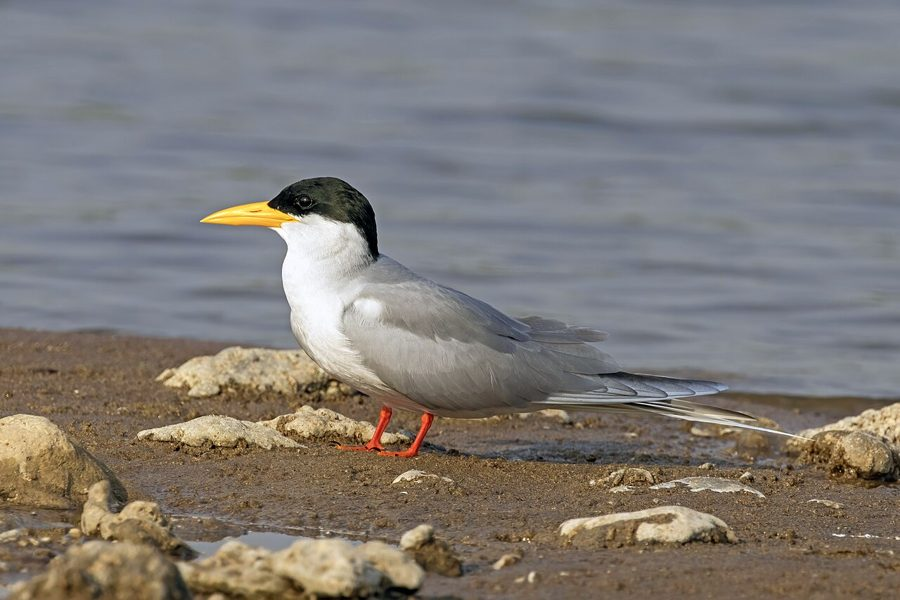

नदी कुर्रीRiver Tern
Sterna aurantia · Laridae · BRD-0160

- Scientific name वैज्ञानिक नाम
- Sterna aurantia (Lesson, 1843)
- Family कुल
- Laridae
- Hindi हिंदी
- नदी कुर्री
- Local names स्थानीय नाम
- nadi kurri, kurri, kuri, river tern, tern
- Status here यहाँ की स्थिति
- native
- Movement आवागमन
- Resident, here all year
- IUCN IUCN
- VU
- Review समीक्षा
- audited and independently read
When to look कब देखें
Present all year. साल भर मौजूद।
Largely resident on major river systems of the Indian subcontinent. Some seasonal movements in response to water levels and fish availability. All migrants and visitors →
Tell it apart from इनसे अलग पहचानें
नदी कुर्री / River Tern
Sterna aurantia (Lesson, 1843) — Laridae
नदी कुर्री — यह सफेद चिड़िया नदी की बालू पर रहती है और पानी में छलाँग लगाकर मछलियाँ पकड़ती है। सिर काला होता है, पंख और पीठ धूसर होती हैं। नारंगी चोंच और पीले पैर इसे पहचानने में मदद करते हैं। यह बहुत सक्रिय होती है और पूरे दिन पानी के ऊपर उड़ती रहती है। घाघरा और राप्ती नदियों पर इसे देख सकते हैं।
Quick Identification त्वरित पहचान
| Feature | Description |
|---|---|
| Size | Medium tern, 33–35 cm; streamlined |
| Plumage | White body; grey back and wings; black cap |
| Head | Black cap extending to nape; white face and chin |
| Bill | Orange to orange-yellow; pointed; relatively long |
| Legs | Yellow to orange-yellow; short |
| Tail | Deeply forked; white with grey shading |
| Flight | Swift, agile; hovers before diving for fish |
| Behaviour | Hovers and plunge-dives; often in small flocks |
Field tip: On river sandbars in eastern UP, look for a white tern with a black cap, grey back, and distinctive orange bill. The bird flies swiftly above the river, hovers, and plunges into the water to catch fish. The deeply forked white tail and orange-yellow legs are diagnostic. Often seen perched on sandbars in small flocks or actively feeding over water.
हिंदी — कैसे पहचानें:
सफेद और नीली चिड़िया।
काली टोपी (cap) जैसा सिर।
नारंगी चोंच।
पीली टाँगें।
पानी में छलाँग लगाता है।
Morphology आकारिकी
Biometrics:
| Measurement | Range |
|---|---|
| Total length | 330–350 mm |
| Wing (flattened chord) | 245–270 mm |
| Tail | 120–140 mm (fork depth) |
| Bill | 42–50 mm |
| Tarsus | 13–16 mm |
| Weight | 150–200 g |
Plumage: Head black cap (from crown to nape, sometimes extending slightly below eye). Face white. Back and scapulars pale grey. Rump white. Wings grey above (coverts and flight feathers). Underparts white. Tail white, deeply forked. In some light, back and wings may appear slightly darker.
Head: Black cap with sharp demarcation from white face. Cap extends to nape and sometimes onto upper back.
Bill: Orange to orange-yellow; pointed, relatively long. Dark tip. Suited for capturing small fish.
Legs: Short, yellow to orange-yellow. Feet webbed (typical of terns).
Eyes: Dark; positioned for underwater vision when diving.
Sexes: Similar; slight seasonal variation in cap darkness.
Juveniles: Cap duller; greyish; white forehead more extensive. Orange on bill less developed initially.
Winter birds: Black cap may become duller, cap may show some white streaking.
Vocalisations
Active vocalisers, particularly when breeding or feeding:
- Call: A loud, sharp kik-kik-kik or ki-i-i given in flight or when hovering.
- Alarm call: A harsh, loud kree-kree-kree when disturbed or defending territory.
- Contact call: Softer chirps between flock members.
हिंदी: बहुत तेज़ आवाज़, विशेषकर पानी पर उड़ते समय।
Behaviour & Ecology व्यवहार और पारिस्थितिकी
Specialist fish-eater: Feeds exclusively on small fish:
- Small cyprinids (carp family fish)
- Other small river fish
- Occasionally larger insects
Feeding technique: Hunts by flying above water, hovering at height, and plunge-diving into the water to capture fish. Makes repeated dives when fish are abundant. Often feeds in shallow sections of river.
Social behaviour: Solitary or in small flocks on water or sandbars. Becomes more gregarious during breeding season and at communal roosts. May form loose feeding flocks.
Roosting behaviour: Roosts on sandbars and shingle islands; often communal in small groups.
Habitat specialist: Strictly dependent on river systems with suitable fish stocks and sandbars for roosting and nesting. Requires clear or relatively clear water for diving.
Breeding: Monogamous; colonial or semi-colonial nester; multiple pairs may breed on the same sandbar.
Resident: Largely resident year-round in eastern UP; some local movements with water levels and fish availability.
हिंदी: नदी में मछलियाँ खाता है। हवा में झूमते हुए पानी में छलाँग लगाता है।
Life Cycle / Phenology जीवन चक्र
Resident: Present year-round on suitable river systems in eastern UP.
Breeding: February to September; peak April–August. Colonial or semi-colonial nester; multiple pairs on sandbars.
Nesting: Ground nest — a simple scrape in sand or gravel on sandbar with minimal lining. Often in loose colonies.
Eggs: Typically 2–3 buff or olive eggs with dark markings; incubation approximately 21–24 days by both parents.
Chicks: Semi-precocial; leave nest at 3–4 weeks but remain dependent. Fed by parents. Fed by regurgitated fish or whole small fish.
Fledging: Chicks become independent at approximately 4–5 weeks; continue being fed for several weeks after fledging.
Roosting: On sandbars and islands; often communal.
Water level dependency: Breeding success tied to water levels and fish availability; flooding may inundate nests.
हिंदी: बसंत से शरद तक प्रजनन करता है। साल भर नदी पर रहता है।
Host Plants or Prey आहार
| Food Type | Examples |
|---|---|
| Small fish | Cyprinids, other small river fish |
| Fish fry | Small fish juveniles |
| Occasionally insects | Flying insects rarely |
हिंदी: सिर्फ छोटी मछलियाँ खाता है। नदी में शिकार करता है।
Predators / Natural Enemies शत्रु
- Large fish: Large predatory fish may take chicks or fledglings
- Snakes: Aquatic snakes; rare given bird nesting on open sand
- Monitor lizards: May predate eggs and chicks
- Crows and corvids: Depredate eggs and young chicks
- Habitat loss: Loss of suitable sandbars and river habitat
- Water pollution: Pollution affecting fish stocks
- Fishing nets: Accidental entanglement
हिंदी: मछली पकड़ने के जाल में फंस सकता है। नदी के प्रदूषण से मछली की संख्या कम हो जाती है।
Agricultural / Human Relevance कृषि प्रासंगिकता
Protected species: Listed in Schedule IV of the Wildlife (Protection) Act 1972, amended 2022. All wild birds are protected.
IUCN Vulnerable status: Classified as Vulnerable (VU) by the IUCN Red List. Population decline driven by:
- Loss and degradation of river sandbar habitat
- Water management practices (dams, barrages) that affect water flow and sandbar formation
- Pollution affecting fish stocks
- Fishing activities and accidental entanglement in nets
- Sand mining from rivers
- Human disturbance at nesting sites
Ecosystem role: As a specialist fish-eater, the River Tern plays a role in fish population control and floodplain ecology.
Habitat conservation: The species is dependent on healthy river systems with good fish stocks and minimal pollution. Its presence indicates river quality and habitat health.
हिंदी: यह विधि अधिनियम 1972 के अंतर्गत संरक्षित है। विश्व स्तर पर दुर्बल (Vulnerable) है।
Expected Locally स्थानीय रूप से अपेक्षित
Not a field record. Written from published accounts for eastern Uttar Pradesh. No confirmed local sighting yet — if you have seen it, that is what the atlas needs.
अभी तक स्थानीय पुष्टि नहीं। यह विवरण प्रकाशित स्रोतों से है, किसी अवलोकन से नहीं।
The River Tern is expected as a resident on the sandbars of the Ghaghra and Rapti rivers in Basti and Ayodhya districts, particularly at Parvati Arga. The species should be looked for flying above the river, hovering, and plunge-diving for fish. The combination of white body, black cap, grey back, and orange bill is distinctive. The deeply forked white tail and orange-yellow legs are diagnostic. Most active during daylight hours when feeding. A first record would be a clear photograph showing the black cap, orange bill, grey back, and deeply forked white tail, with date and location.
हिंदी: पार्वती अर्घा पक्षी विहार में देख सकते हैं। घाघरा नदी पर उड़ता हुआ।
Distribution वितरण
Global range: Indian subcontinent and parts of Southeast Asia, primarily on major river systems.
In India: Distributed on suitable river systems throughout mainland India, with populations concentrated on the Ganges-Brahmaputra and other major river systems.
In Uttar Pradesh: Present on major rivers including the Ganges, Gomti, Ghaghra, and Rapti; populations have declined significantly.
In Basti district / eastern UP: Expected on the Ghaghra, Rapti, and Saryu river systems. Recorded at Parvati Arga. Current population status uncertain; species appears to be declining.
Research Questions शोध प्रश्न
- What is the current population size and breeding distribution of River Tern on the Ghaghra-Rapti system? / भारतीय नदी कुर्री की आबादी कितनी है?
- How do nesting sites vary seasonally in response to water levels?
- क्या यह चिड़िया साल भर यहाँ रहता है, या मौसमी है? How permanent are resident populations?
- What fish species comprise the diet, and how does fish availability affect breeding success?
- How is the species affected by fishing activities (nets, traps) and accidental entanglement?
- What water quality parameters (pollution, temperature) affect fish stocks and tern populations?
Similar Species मिलती-जुलती प्रजातियाँ
| Species | How to distinguish | हिंदी | Field Rule | |
|---|---|---|---|---|
| Common Tern (Sterna hirundo) — winter visitor | Smaller (33–35 cm); red bill and legs (not orange); white forehead | कॉमन टर्न | Common Tern has red bill and red legs. River Tern has orange bill and orange-yellow legs. | |
| [[black_bellied_tern\ | Black-bellied Tern]] (Sterna acuticauda) — if sympatric | Smaller (28–29 cm); dark belly and vent; shorter tail fork | काली-पेट वाली कुर्री | Black-bellied Tern is smaller with dark belly. River Tern is larger with white belly and deeply forked tail. |
Field rule: White tern with black cap + orange bill + deeply forked white tail + grey back = River Tern. Hovers and plunge-dives for fish. Medium-sized tern with distinctive orange bill.
Taxonomy & Classification वर्गीकरण
Original description. Described by René Primevère Lesson in 1843. Type locality: India.
Subspecies. Monotypic — Sterna aurantia aurantia. No subspecies are recognised.
Family and order placement. Order Charadriiformes; family Laridae (gulls and terns). The genus Sterna contains numerous tern species; S. aurantia is the Asian river tern.
Phylogenetic notes. Molecular studies place Sterna aurantia within the "white terns" clade, distinct from sooty terns and other regional tern groups.
IUCN status rationale. Classified as Vulnerable (VU) due to:
- Loss and degradation of river sandbar habitat
- Water management practices affecting water flow and sandbar formation
- Pollution affecting fish stocks
- Fishing activities and accidental entanglement
- Human disturbance
Population decline exceeds 30% over three generations (30 years).
हिंदी: भारत की मूल निवासी चिड़िया है। विश्व स्तर पर दुर्बल (Vulnerable) है।
Photo Gallery फोटो गैलरी
No photos yet — add field photos to media/species/river_tern/ and run node scripts/sync_photos.js.
Wanted photos:
- In flight showing deeply forked tail
- Hovering above water
- Plunge-diving
- Perched on sandbar showing orange bill
- Close-up of head with black cap
- Flock on sandbar
References संदर्भ
- Lesson, R.P. (1843). Écho du Monde Savant. [Original description]
- Ali, S. & Ripley, S.D. (1987). Handbook of the Birds of India and Pakistan. Vol. 3. Oxford University Press, New Delhi.
- Grimmett, R., Inskipp, C. & Inskipp, T. (2011). Birds of the Indian Subcontinent. 2nd ed. Christopher Helm, London.
- BirdLife International (2024). Sterna aurantia. IUCN Red List of Threatened Species. Ver. 2024.
- Rasmussen, P.C. & Anderton, J.C. (2005). Birds of South Asia: The Ripley Guide. Smithsonian Institution, Washington DC.
- Yashmita-Ulman & Singh, M. (2025). A preliminary assessment of avifaunal diversity in Parwati Arga Bird Sanctuary, Uttar Pradesh, India. Journal of Threatened Taxa 17(11): 27976–27984.
Source file: species/fauna/birds/river_tern.md